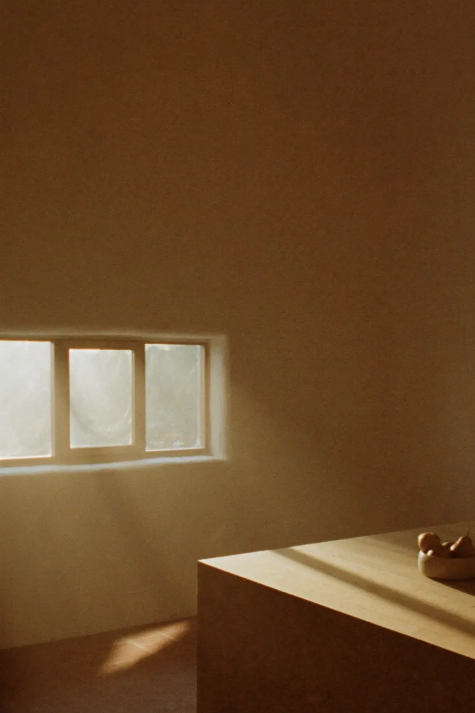
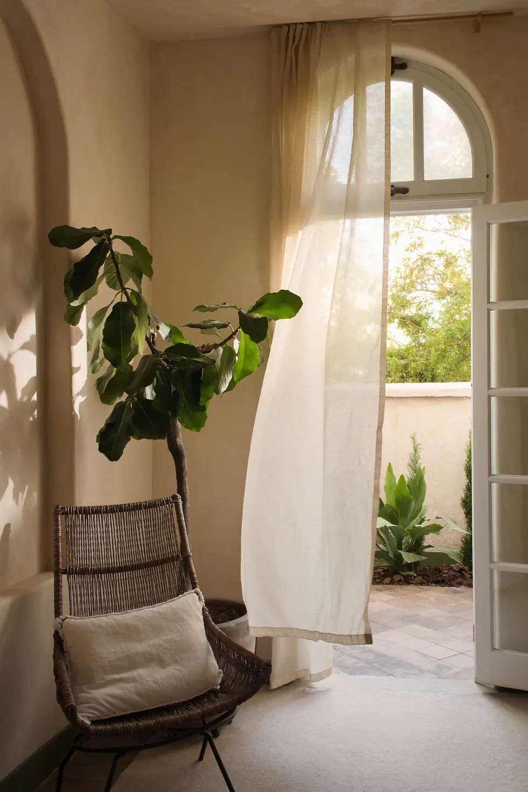
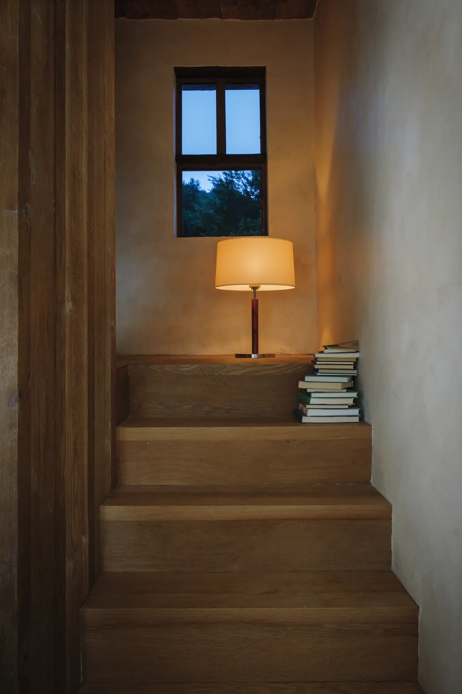
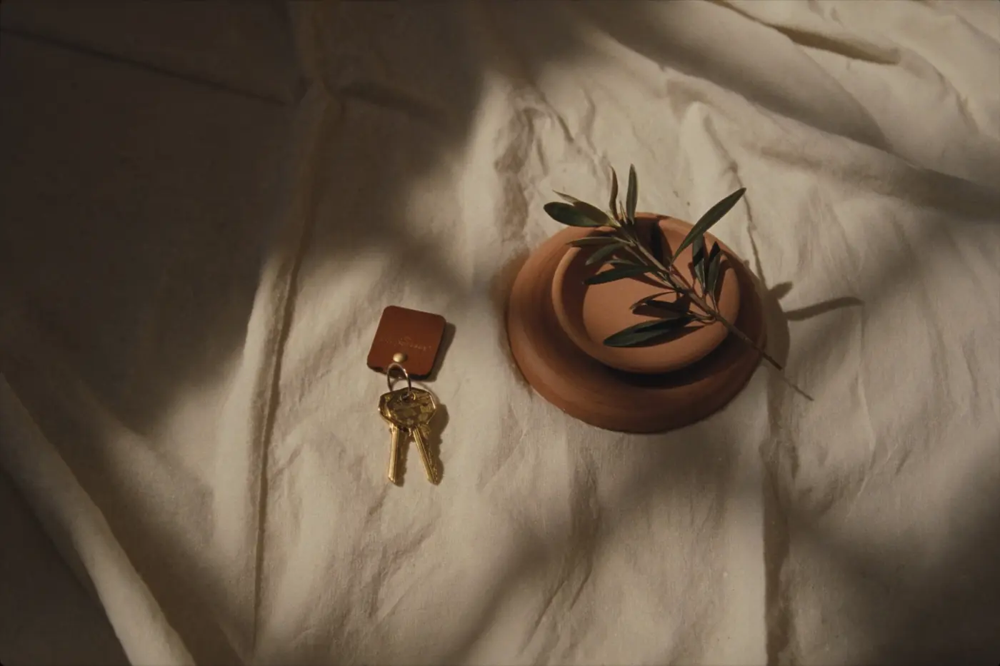
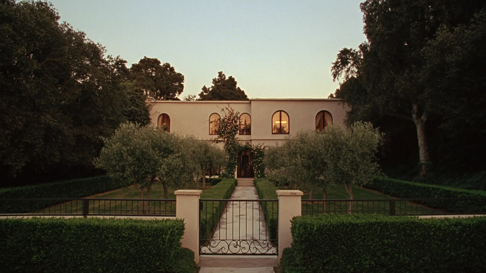

We sell a handful of homes a year — never more than we can walk, know,
and honestly tell. When one of ours suits you, we'll say so.
When it doesn't, we'll say that too.
No. 14 Verrell Lane — the garden front, an hour before the lamps go on.
The signature exercise
Every home we take on gets taken apart first.
Not with a crowbar — with a drawing. Scroll, and No. 14 goes back together
the way we came to understand it.
Plan
It starts flat.
Every home we take on gets redrawn — not to flatter it, to understand it.
Where the light comes from. Where the life happens.
Walls
Rooms are promises.
This one holds mornings; that one holds winter evenings. We walk every room
before we say a word on a house's behalf.
Roof
The idea holds.
The roof goes on and the drawing becomes shelter. We list nothing
we wouldn't stand under in heavy rain.
Home
By evening, it isn't a plan.
It's where the lamp goes on. That — not the floor area — is the thing
we are actually selling.
PlanWallsRoofHome
What walking a house teaches
Three rooms, three hours.
Photographs are told when to lie. Hours aren't. These are from homes
we've sold — each one at the hour we'd tell a buyer to visit.

east window, no blinds needed
7 am · the kitchen
Morning light does this for exactly forty minutes.
The listing said "bright kitchen," which is true and useless.
What matters is that the sun lands on the counter while the kettle's on,
and by the time you leave for work it has moved along the wall like it's done
living here for a hundred years.
— we time every viewing to the room it flatters

the curtain lifts when the court door is open
3 pm · the garden room
You will read here more than you think.
Every house has one room that decides the sale. In No. 14 it's this one:
an arch, a curtain, a fig tree that came with the house and stays with it.
Nobody has ever stood in it and asked about the school catchment first.
— the fig conveys; we checked

a lamp on a landing is a second living room
8 pm · the stair
Houses tell you where to pause.
A landing wide enough for a lamp and a chair is worth more than
a fourth bedroom, and no floor plan will ever say so. This is why we walk them
at night too — the evening rooms only introduce themselves after dark.
— ask us where the lamp goes; every house has the spot
Small on purpose
How we work.
i.
We walk it first.
Every home is visited by the person who will sell it — attic to meter box,
morning and evening. Notes, not adjectives.
ii.
We match, we don't market.
Before a portal ever sees it, a shortlist of people we believe belong in it
hears about it — with the honest notes attached, faults included.
iii.
One person, start to keys.
The person who walked it answers the phone, hosts the visits, negotiates,
and puts the keys in your hand. No handovers, no call centre.

The good part. It never gets old, and we've decided it never will —
which is why we stay small.
On our books now
The current homes.
Three at the moment; rarely more than five. Each shown here as we first
meet it — as a drawing. (Hartline is a demonstration business, so these are
illustrative homes: the drawings are real, the addresses aren't.)
Sample
No. 14 Verrell Lane
the house above — limewash & oak
Two storeys under a tiled roof. The garden room faces east, the fig conveys,
and the stair asks politely for a lamp.
Guide on enquiry · sole listing
Sample
The Almond House
Copperfield — a courtyard first, a house second
Single-storey around a walled court. Loses the sun at four; gives it back
all morning. Best visited with coffee.
Guide on enquiry
Sample
Stairhall Cottage
Brae End — small rooms, deep sills
A cottage that reads bigger than its plan because every room pauses well.
The stair hall is the second living room.
Guide on enquiry

Come stand in the doorway.
Photographs here are honest, but doorways are honester. Visits are by
appointment, one household at a time, at the hour the house shows best.